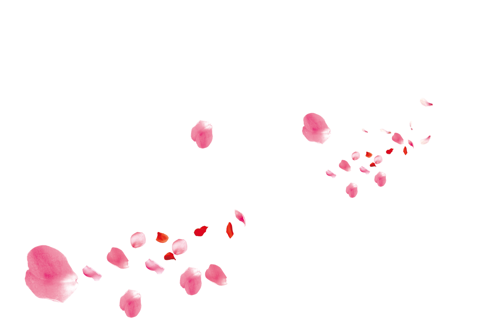
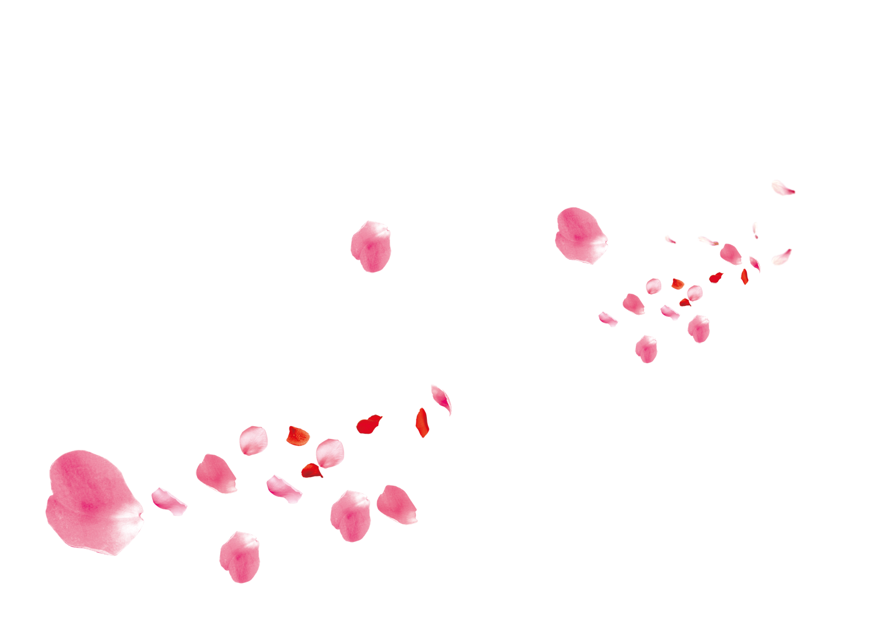

Alexandra Hernandez
software engineer

software engineer


I live in Florida - cannot get enough of the weather here. Things I ❤ are️ coffee, my nintendo switch, and my too cute 12 year old dog baby! I currently work for an application security company, and love solving challenging problems.

My interest in software and web development started in 2010, when I found out the powers of HTML and CSS through MySpace (how time has passed!). Fast forward to 2018, I attended Flatiron School where I learned the different technical skills needed to be successful as a web developer.
Right after graduating from the technical school, I received an offer to work at an application security company. As of today I've been exposed to and have hands-on experience using different technologies.
A few technologies I've recently worked with include:
| ➤ Go | ➤ Javascript |
| ➤ Ruby | ➤ Python |
| ➤ React.js | ➤ Docker |
Software Engineer II @ Contrast Security
November 2020 - Present
Develop and maintain a Go service that other development teams use in order to communicate with the client facing service.
Work with teams dependent on our service to enhance the api, expand existing messages and build deprecation paths for certain features.
Collaborate with a security research team in order to improve how our service analyzes potential threats.
Help advance the new Go product by implementing minimum GA requirements for official public release.
Software Engineer @ Contrast Security
January 2019 - November 2020
Collaborated in a small team to maintain and improve the testing tooling used by other teams to test their software.
Assisted in developing an internal command line tool that will run containerized applications with the company’s product in various environments using Docker.
Implement cloud provider’s (Azure) microservices in our testing tooling to assist us in providing enhanced features for the different engineering teams.
Integrate different libraries into web applications to assure that the behavior of the engineering product is consistent/as expected.
Reviewed team members’ code and assessed the impact their changes made before being merged.
If you have any questions, please contact me! I'll try my best to get back to you soon. :)
CONTACT ME